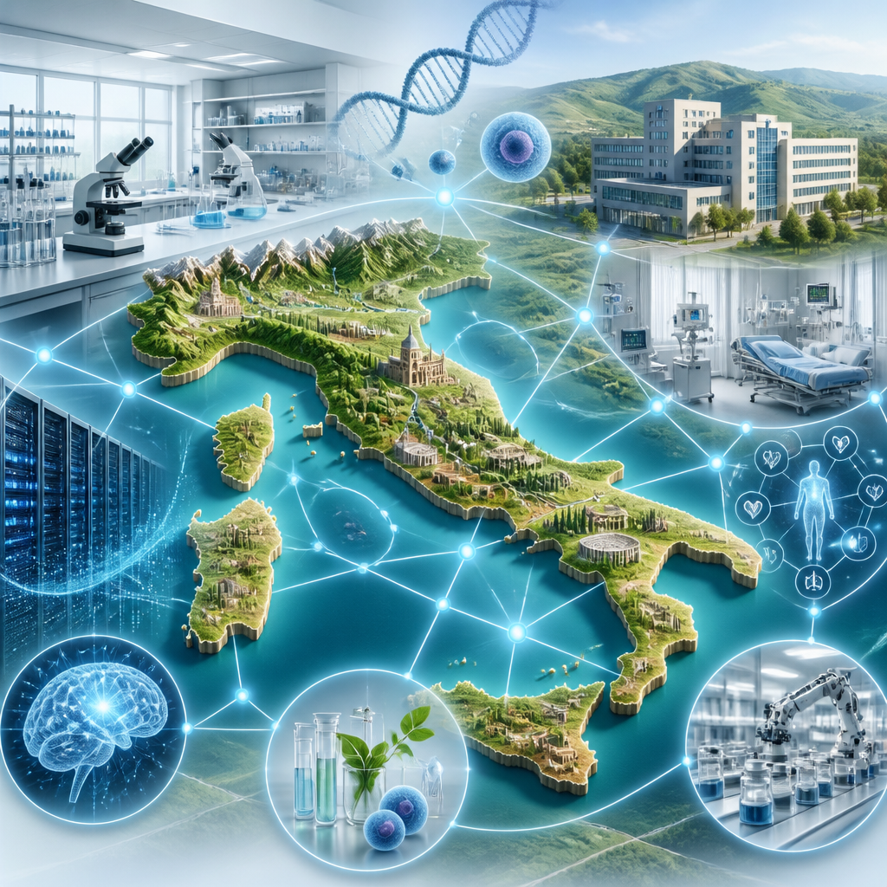

Meet in Italy for Life Sciences riunirà ricerca, imprese, istituzioni e investitori attorno alle strategie per l’Italia e l’Europa.
Le scienze della vita riuniscono attività di ricerca, innovazione e impresa legate alla salute e alle tecnologie per la salute. In Italia questo ecosistema conta oltre 6.000 fra imprese e istituti di ricerca, 1,8 milioni di addetti e più di 273 miliardi di euro di valore della produzione. Il settore sarà al centro dell’edizione 2026 di Meet in Italy for Life Sciences, in programma a Roma il 13 e 14 ottobre.
L’appuntamento, promosso da ALISEI, il Cluster Tecnologico Nazionale delle Scienze della Vita, riunirà il mondo della ricerca, l’industria, le istituzioni, gli investitori e gli innovatori. L’obiettivo è discutere le esigenze del comparto e le strategie per sostenerne lo sviluppo in Italia e in Europa. L’evento è indicato come il principale momento nazionale di confronto trasversale dedicato al settore da oltre dieci anni; nell’edizione precedente ha coinvolto più di 600 operatori e soggetti interessati.
Il tema di fondo è il collegamento fra conoscenze scientifiche, sistema sanitario, imprese e territori. Questo passaggio viene spesso definito trasferimento tecnologico: è il percorso che porta conoscenze, risultati e competenze della ricerca verso applicazioni concrete. Secondo Alessandra Gelera, presidente di ALISEI, mettere in relazione soggetti diversi significa condividere infrastrutture e conoscenze, accelerare questo passaggio e aiutare le idee a trovare i partner necessari per crescere.
Andrea Lenzi, presidente del Consiglio Nazionale delle Ricerche, richiama il valore della ricerca come punto di partenza dell’innovazione. Le conoscenze, le abilità e le competenze prodotte dalla ricerca possono generare nuove soluzioni e trasformarsi in valore e impatto per la società. Il CNR è fra i co-organizzatori dell’iniziativa, insieme all’Agenzia ICE per la promozione all’estero e l’internazionalizzazione delle imprese italiane.
Fra le questioni al centro dei lavori ci saranno la telemedicina e l’accesso al dato. La telemedicina è l’erogazione di attività e servizi sanitari a distanza; il telemonitoraggio riguarda invece il controllo a distanza di informazioni utili per seguire le condizioni di salute. Il punto indicato da ALISEI non è raccogliere una quantità maggiore di dati, ma individuare quelli realmente utili per migliorare le prestazioni cliniche e l’organizzazione del Servizio Sanitario Nazionale.
Il Comitato Tecnico Scientifico di ALISEI ha elaborato un nuovo documento programmatico, pensato come strumento di lavoro e confronto con istituzioni e sistema nazionale. Per svilupparlo sono state analizzate esperienze regionali e locali di telemedicina, telemonitoraggio e presa in carico della cronicità, cioè l’organizzazione dell’assistenza per condizioni di salute che richiedono un seguito nel tempo. Lo scopo è individuare un modello che possa essere esteso e adattato alle caratteristiche dei diversi territori.
L’analisi prende in considerazione non soltanto la tecnologia, ma anche l’organizzazione, il coinvolgimento dei pazienti, la formazione, la governance e la gestione del dato. La governance indica le regole e i processi con cui si orientano e coordinano decisioni e attività. L’obiettivo dichiarato è costruire modelli organizzativi capaci di mettere a sistema ricerca, sanità, industria e territori, favorendo soluzioni condivise e trasferibili attraverso il confronto tra pubblico e privato.
Il programma dell’evento si articola in quattro pilastri. Il primo è il confronto, con conferenze, incontri di vertice e sessioni di approfondimento sui temi più avanzati. Il secondo è l’incontro, con appuntamenti mirati tra aziende e ricercatori attraverso una piattaforma dedicata, realizzata con il supporto della rete europea per le imprese, e con uno spazio espositivo dedicato a organizzazioni, progetti e tecnologie innovative.
Il terzo pilastro è la conoscenza, attraverso laboratori e workshop tematici pensati per condividere competenze, costruire visioni comuni e avviare nuove progettualità. Il quarto riguarda l’innovazione: il programma dedicato alla valorizzazione delle start-up, delle novità più promettenti e dell’incontro con investitori globali coinvolgerà 20 start-up e 10 gruppi di ricerca nazionali e internazionali.
La conferenza istituzionale partirà dalla Strategia Europea per le Scienze della Vita. Nella prima giornata il confronto coinvolgerà ministeri e istituzioni italiane ed europee che incidono sulla competitività e sulla crescita del settore. La seconda giornata guarderà alla dimensione nazionale, con un dialogo fra pubblico e privato per individuare leve competitive, politiche strategiche e risorse da valorizzare per ricerca, innovazione e salute.
L’Agenzia ICE contribuirà anche con iniziative rivolte agli investimenti e all’internazionalizzazione. Fra queste figurano la presenza di potenziali investitori esteri, un percorso di formazione manageriale dedicato all’innovazione aperta nella tecnologia per la salute fra Italia e Marocco, un concorso per start-up emergenti e un incontro di relazioni professionali fra ricercatori, imprenditori e investitori internazionali. Il filo conduttore è rendere più riconoscibili le competenze e le tecnologie italiane e favorire collaborazioni capaci di accompagnare le scoperte di laboratorio verso il mercato e la società.
Questo articolo l'hai letto sul blog di Meteo News Radar: un'app che ti mostra da dove vengono i numeri, invece di limitarsi a dartelo. E ogni mattina ne trovi uno nuovo come questo.